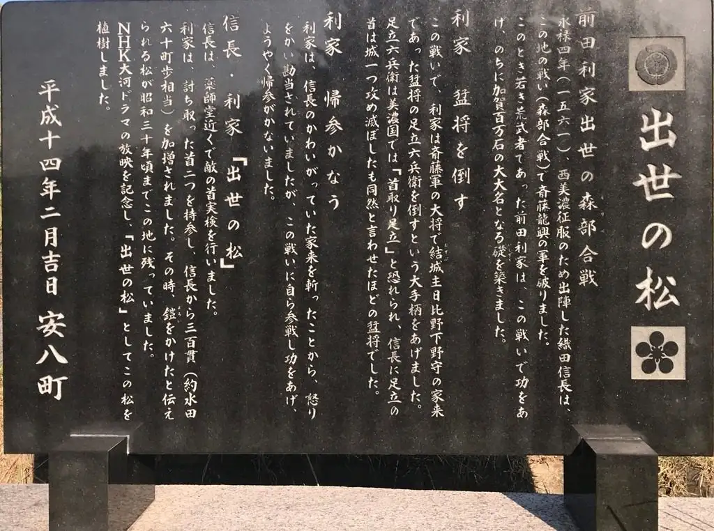
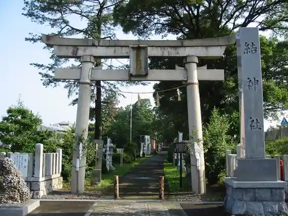

Anpachi
Anpachi · Gifu
Anpachi
Highlighted on the Gifu map.

Sights
Anpachi Onsen
Ea Kaoru Honmaru Shoppu Asano Nenshi
Ketsu Shrine

Anpachi Hyaku Umezono
Moribe no Kassen Ba Ato to Shusse no Matsu (Toshiie Tomatsu)
Koken Tera
Meiboku Hayashi Shrine
Mino Michi Ichiri Tsuka
Moribe Kawago Senjo Yakushido